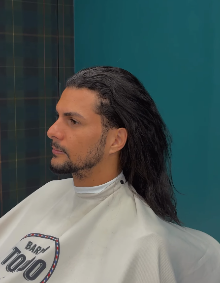
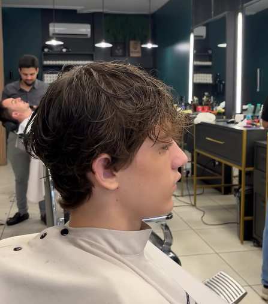
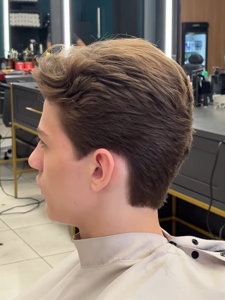
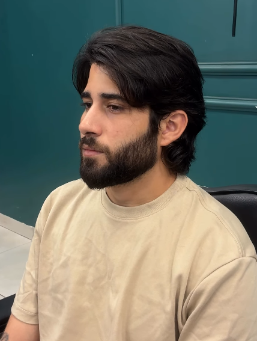
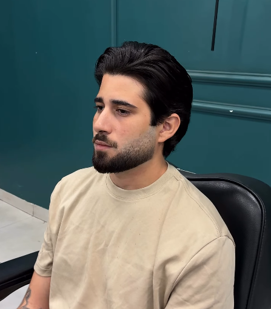
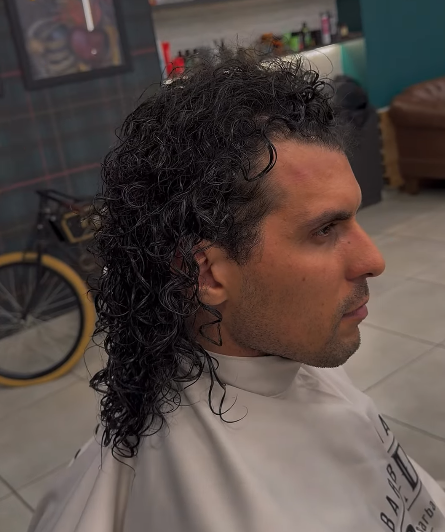
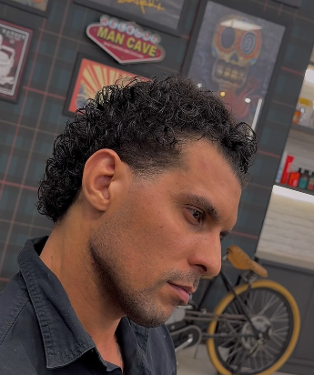
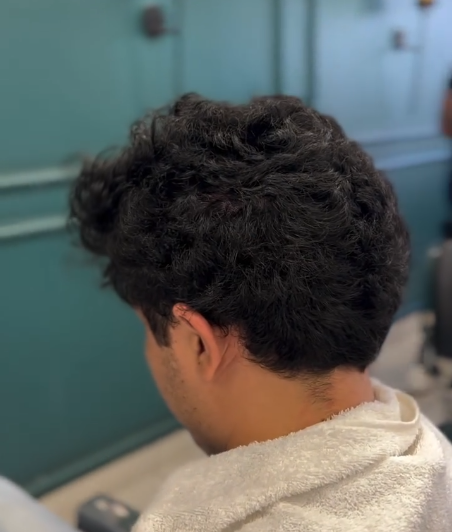

Antes Depois
DepoisVisagismo Masculino
Adequação das linhas faciais e proporção harmônica do corte.

TRANSFORMAÇÕES REAIS
Role para ver a transformação de cada corte e barba em tempo real.

AntesDepoisAdequação das linhas faciais e proporção harmônica do corte.

Antes
DepoisGraduação milimétrica e acabamento refinado.

Antes
DepoisAlinhamento de contornos, toalha quente e finalização com navalha.

Antes
DepoisCaimento natural, textura e precisão artesanal em cada mecha.

Antes Depois
DepoisControle de volume, sedosidade e aspecto natural impecável.
Conheça a equipe desta unidade.
Consulte os profissionais disponíveis no agendamento desta unidade.


Use as setas ou deslize para conhecer a equipe.
Nossa história
A Toledo nasceu em Palmas para cuidar do cabelo e da barba.
A primeira unidade abriu em maio de 2015. Em agosto de 2019, a Palmas Brasil Sul passou a fazer parte dessa história.
Hoje, você pode escolher entre os dois endereços e agendar on-line. Também há atendimento conforme a disponibilidade de horários.
Consulte os horários e agende nesta unidade.
Avenida Siqueira Campos · 202 Sul
Conjunto 1, lote 13, sala 1
Plano Diretor Sul · Palmas, TO
CEP 77020-450